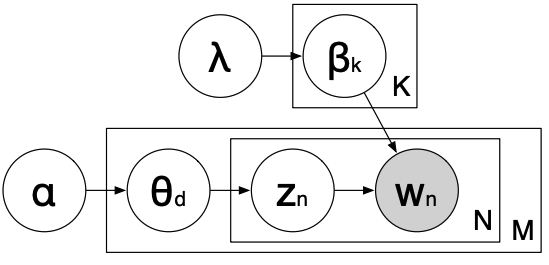

LDA details#
(Optional) Plate notation#
Used in Bayesian inference for representing variables that repeat.
It shows the generative process of the LDA model. It also shows the dependency structure in the probability distribution.
We are not going into the details but I would like you to be familiar with this picture at a high-level because it’s likely that you might see it in the context of topic modeling.

\(\beta_k \rightarrow\) Distribution over words for topic \(k\)
\(\theta_d \rightarrow\) Distribution over topics for document \(d\)
\(w_n \rightarrow\) word
\(Z_n \rightarrow\) topic
\(N \rightarrow\) Size of the vocabulary
\(M \rightarrow\) Number of documents
\(\lambda \rightarrow\) Hyperparameter for word proportion
\(\alpha\rightarrow\) Hyperparameter for topic proportion
(Optional) Mathematical presentation of the generative story (plate diagram)#
For each topic \(k \in \{1, \dots, K\}\) draw a multinomial distribution \(\beta_k\) from a Dirichlet distribution with parameter \(\lambda\).
For each document \(d \in \{1, \dots, M\}\), draw a multinomial distribution \(\theta_d\) from a Dirichlet distribution with parameter \(\alpha\).
For each word position \(n \in \{1, \dots, N\}\), select a hidden topic \(Z_n\) from the multinomial distribution parameterized by \(\theta\).
Choose the observed word \(w_n\) from the distribution \(\beta_{Z_n}\).
(Optional) LDA Inference#
Infer the underlying topic structure in the documents. In particular,
Learn the discrete probability distributions of topics in each document
Learn the discrete probability distributions of words in each topic
(Optional) LDA Inference#
We are interested in the posterior distribution: \(P(z, \beta, \theta| w_n, \alpha, \lambda)\)
Observations: words. Everything else is hidden (latent).
\(\lambda\): Hyperparameter for word proportion
High \(\lambda\) → every topic contains a mixture of most of the words
Low \(\lambda\) → every topic contains a mixture of only few words
\(\alpha\): Hyperparameter for topic proportion
High \(\alpha\) → every document contains a mixture of most of the topics
Low \(\alpha\) → every document is representative of only a few topics
(Optional) Calculating the conditional probability#
Sets up a Markov chain that converges into the posterior distribution of the model parameters or word–topic assignments.
Two components
How much this document likes topic \(k\): $\(\frac{n_{d,k} + \alpha_k}{\sum^K_i n_{d,i} + \alpha_i}\)$
How much this topic likes word \(w_{d,n}\): $\(\frac{V_{k, w_{d,n}} + \lambda_{w_{d,n}}}{\sum_i V_{k,i} + \lambda_i}\)$
The conditional probability of word topic assignment given everything else in the model:
\(n_{d,k} \rightarrow\) number of times document \(d\) uses topic \(k\)
\(V_{k, w_{d,n}} \rightarrow\) number of times topic \(k\) uses word type \(w_{d,n}\)
\(\alpha_k \rightarrow\) Dirichlet parameter for document to topic distribution
\(\lambda_{w_{d,n}} \rightarrow\) Dirichlet parameter for topic to word distribution
(Optional) LDA algorithm#
Suppose \(K\) is number of topics
For each iteration \(i\)
For each document \(d\) and word \(n\) currently assigned to topic \(Z_{old}\)
Decrement \(n_{d,Z_{old}}\) and \(V_{Z_{old}, w_{d,n}}\)
Sample \(Z_{new} = k\) with probability proportional to \(\frac{n_{d,k} + \alpha_k}{\sum^K_i n_{d,i} + \alpha_i} \frac{V_{k, w_{d,n}} + \lambda_{w_{d,n}}}{\sum_i V_{k,i} + \lambda_i}\)
Increment \(n_{d, Z_{new}} and V_{Z_{new}, w_{d,n}}\)